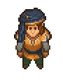

Vagner
| Vagner | |
|---|---|
 | |
Basic Information
| |
Location :
|
The Dead Horse |
Role :
|
Poet |

Vagner is a poet. You can find him at the The Dead Horse. First, he's quite unfriendly, and tells you to go away, because he's not in a good mood.
Quests
Ink and Paper for the Poet
After first having met Ms. Charm, Vagner asks you, what she said to you, and tells you that he wants to impress her by writing poetry. However, he lacks the resources to write anything. However, you earn 5  from that dialogue.
from that dialogue.
The poet needs 10×
Clean paper. You can either make this at the church workbench in the alchemy lab from pigskin paper or in the workyard using the paper press. Alternatively, you can purchase clean paper from the Astrologer but it will take several weeks to collect enough considering how little he has in stock. Return to Vagner for 10  .
.
The poet needs 1×
Ink. It can be made at the church workbench in the Alchemy Lab from black paint, glass cones and water. Black paint is produced at the alchemy workbench. See alchemy for more information. Alternatively ink can be purchased from the Astrologer. Return to Vagner for 10  .
.
Liquid Inspiration
Vagner tells you that he will trade you a good story 1×
story for 1×
Red wine. After trading he will say "Good wine is my friend! Here's a story.". You can either produce the wine yourself or buy it from Horadric among his tier II wares. This quest is repeatable. After doing the exchange six times, this quest is no longer available. He claims that you have taken all his best stories, leaving him unable to impress Ms. Charm.
Write a song to Ms. Charm
Ms. Charm asks you to write her a song. Since you are no poet, you can't do it yourself. You know a poet though, so you ask Vagner if he is willing to help his love. He immediately agrees, but he wants to write not just any song - the best song he ever wrote. To do that he needs a special kind of creative boost. So it happens that he knows the recipe - he heard about it in the university. And now you do too 1×
Booze and 3×
Red mushroom, mixed at a distillery, should do the trick. Brew this wonderful mix and bring it to Vagner. He will chug it, smile widely and ask to wait. Come visit him the next day.
Unexpected side-effects
Upon visiting the tavern the next day (you need to sleep in your bed!), you will find a note from Vagner. In it, he asks you to come to the cliffs east of the mountain fort at night (he will be to the right of the Gypsy Baron; nowhere near Dig or the Lighthouse). When you do, Vagner will emerge from hiding. The special 'creative booster' had a side effect - he has an appearance of a monster rather than a man.
You try to calm the poor soul, but at the same moment patrolling guards stumble upon the two of you. They immediately proceed to capture Vagner, despite your protest that this is no monster. In the end they take him to the mountain fort.
After all this, you end up with song lyrics in your pockets, which you can hand over to Ms. Charm to continue her quest.
Rescue mission
Ms. Charm was so enticed by the song, that she fell in love with the poet and wants him to be rescued. You win the astrologer for that case and manage to organize an expedition to the mountain fort. You succeed in rescuing Vagner.
Ms. Charm even manages to heal the poet, by kissing him.
If all of Vagner's quests are completed, he will leave for the northern fort. For the Game of Crone DLC, he can be contacted via the Royal Services box at the church.
| |||||||||||||||||||||||||||||